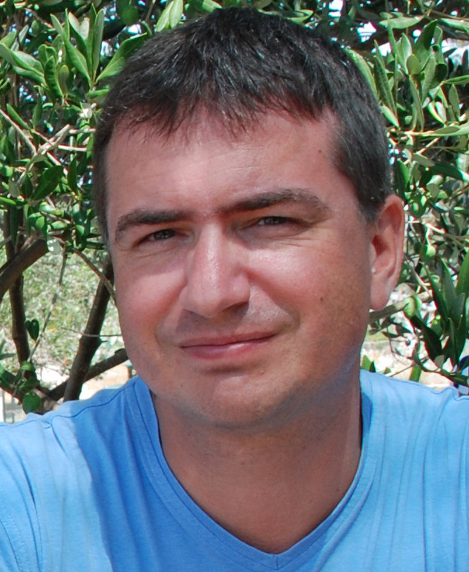
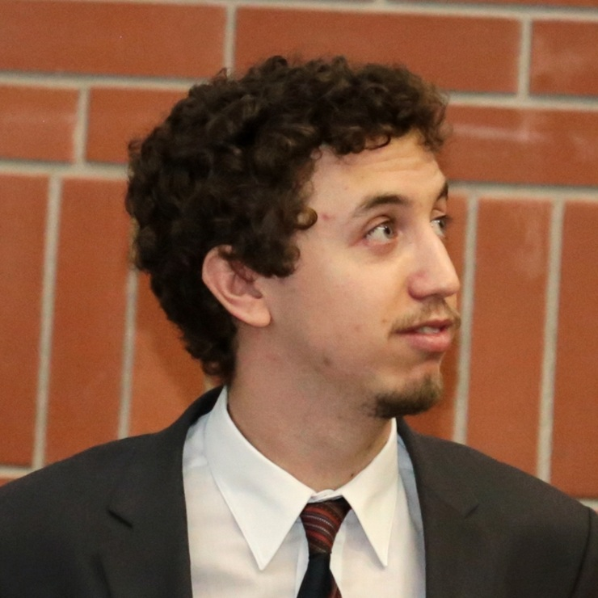
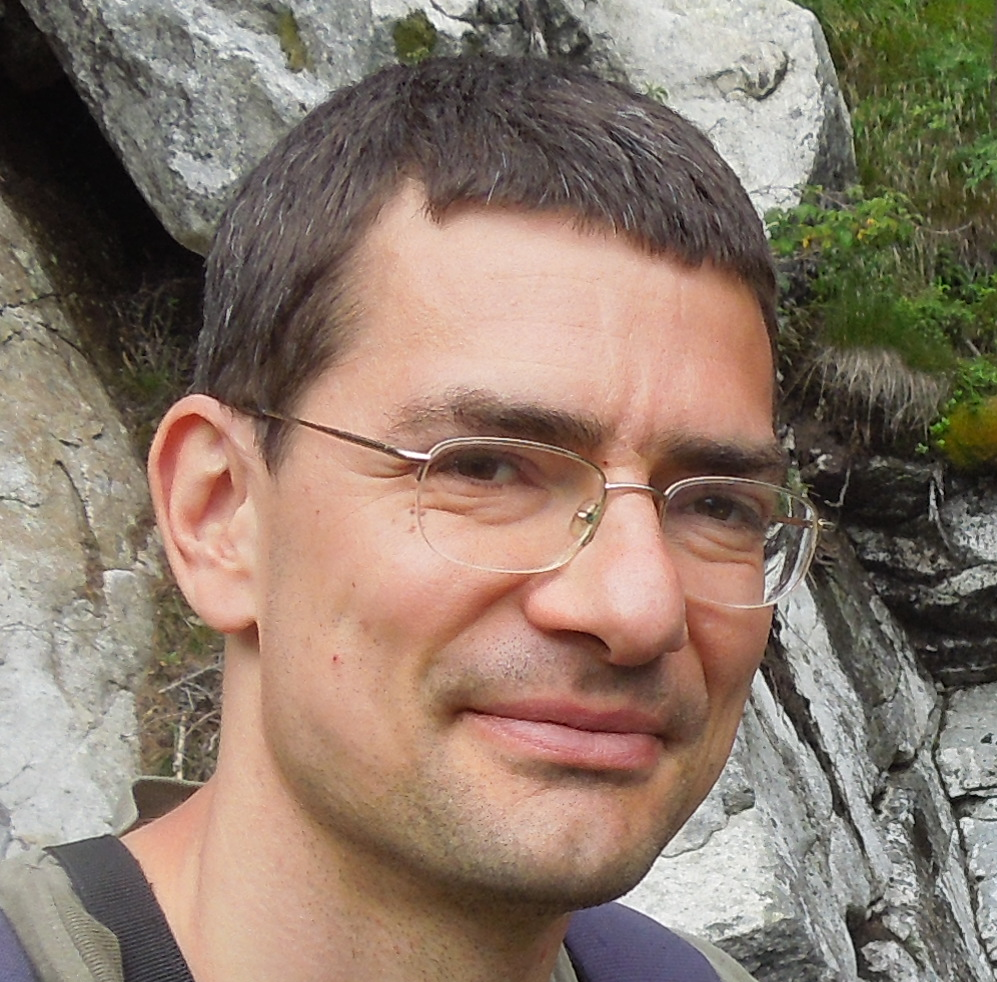

The Group

Gergely Boza
Centre for Ecological Research, Institute of Evolution
My scientific interest embraces computational biology, the forming and stability of social relations, evolutionary game theory and evolutionary ecology. (You can track my scientific activity here.) From 2006 I have taugth biology in the Kölcsey Ferenc Secondary School for two years, and I have taught Biostatistics, Intagrative Biology and Evolutionary Biology at the Eötvös Loránd University. Since 2012 I am organizing the interactive program “Evolution’s Night” at the annual Researchers’ Night at the Eötvös University.

András Hubai
Centre for Ecological Research, Institute of Evolution
I do computational biology, studying the systemwide and evolutionary effects of biological mechanisms in toy models. My main interests are origins of life (abiogenesis), horizonal information transfer, and clonality and spatial organization in plants. You can find my scientific articles here. I teach biostatistics and programming at Eötvös University, Budapest (ELTE) since 2014. I find it important to nurture talent and to popularize science: with the former aim, I organized student conferences and summer schools as a student leader in a university-linked NGO; with the latter aim, I took part in launching the annual Elevator Pitch Festival in Life Sciences, and with it introducing the genre of scientific elevator pitch in Hungary. On the European Researchers' Night, my collegues and I hold interactive exhibitions in the field of evolution and ecology for the interested laypeople: this is the "Night of Evolution".
 Judit Mokos
Judit Mokos
As a PhD student I focus on the evolutionary background of human cooperation.
I have taught Biostatistics at Eötvös University for years, and held "data science workshops".
I have worked with special need children in a family service for seven years.
I have been organizing the interactive program “Evolution’s Night” at the annual Researchers’ Night at the Eötvös University since 2014.
In 2018 I was a finalist in the Hungarian FameLab science communication competition, and in 2016 I have won the 1th place in the Life Sciences Elevator speech festival, PhD section.

Viktor Müller
Department of Plant Taxonomy, Ecology and Theoretical Biology, Eötvös Loránd University
My scientific interest encompasses computational modelling, data analysis and evolutionary theory in virology and immunology. (You can track my scientific activity here .)
I have been teaching the courses Mathematical Modelling of HIV Infections and Computer Modelling in Biology at Eötvös University. I also teach the Modelling Course in Population and Evolutionary Biology at the ETH Zurich.
Since 2011 I have been organizing a popular science lecture series and annual Biology Spring Schools. I have also been contributing to the interactive program “Evolution’s Night” at the annual Researchers’ Night at the Eötvös University since 2012. I have given numerous popular science talks to various audiences.
 István Scheuring
István Scheuring
Centre for Ecological Research, Institute of Evolution
My scientific expertise include evolutionary game theory and evolutionary ecology. (You can track my scientific activity here.)
I have been teaching at the Eötvös Loránd University for more than 30 years. Currently I am teaching evolution and ecology related courses for Biology MSc students. Since 2012 I have been organizing the interactive program “Evolution’s Night” and giving talks at the annual Researchers’ Night at the Eötvös University. I develop scientific experiments for a summer camp (https://batortabor.hu/en/), and train volunteers. I have written 26 popular science articles in various Hungarian journals.
 Zsóka Vásárhelyi
Zsóka Vásárhelyi
Centre for Ecological Research
Scientifically I am interested in the evolution of division of labour in humans and other animals. (You can track my scientific activity here.) I
I have taught Biostatistics and courses about human evolution at the Eütvüs Loránd University. Since 2012 I have been organising the interactive program “Evolution’s Night”, and open discussions at the annual Researchers’ Night at the Eötvös University. I have organized the annual popular science program Life Sciences Elevator Speech festival for years. In my spare time I have worked with children with ADHD for many years.